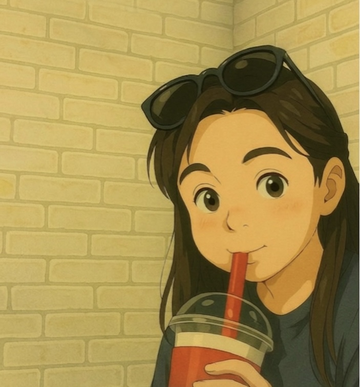

Selected
Works.
テスターとして培った品質へのこだわりと、
アクセシビリティを意識して作成しました。

Miaka
Web Designer / Front-end Engineer
My Story
長崎県五島市出身。豊かな海に囲まれて育ち、釣りやマリンスポーツが生活の一部でした。大学を卒業後、自動車業界へ。現場でシステムの不備に直面し、「もっと使いやすいものを創りたい」とIT業界へ転身。テスターとして品質の重要性を叩き込まれた後、現在の制作の道へ進みました。
Personal Side
小型船舶・特殊小型船舶免許を持ち、自分で船を操縦することも。また、大型2輪免許を保持していますが、過去の愛車は扱いやすいNinja250Rでした。「見た目はタフ、中身は扱いやすさ重視」がバイク選びの基準です。ww
Future Vision
2026年8月、ニュージーランドへ移住予定。五島で培った「海と共に生きる心」と、日本で磨いた「品質への厳格さ」を武器に、世界中へ誠実なデジタル体験を届けていきます。
Core Skills
- UI/UX Design & Web Accessibility(studying)
- Frontend (Tailwind CSS, JavaScript)
- Quality Assurance (ITIL 4 mindset)